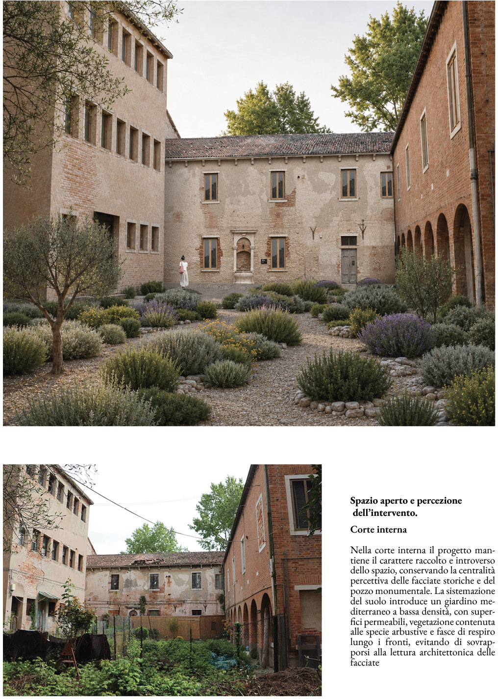
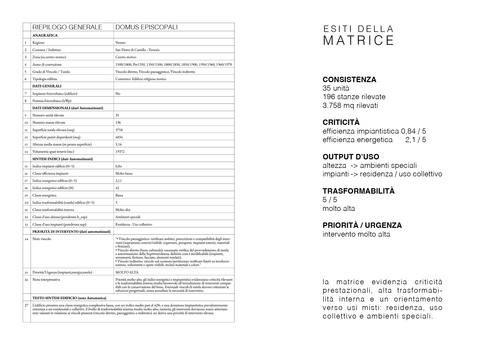
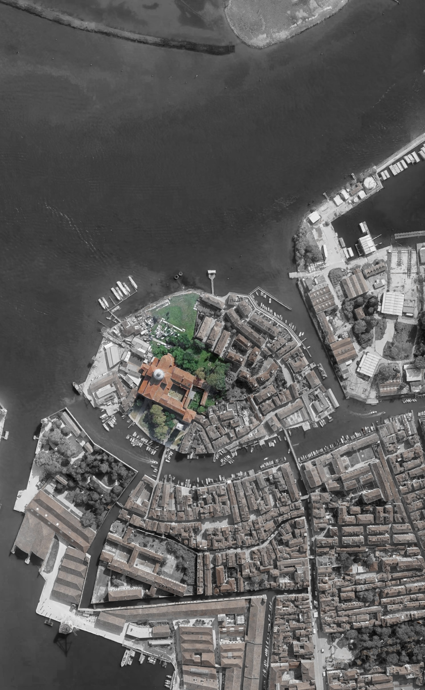
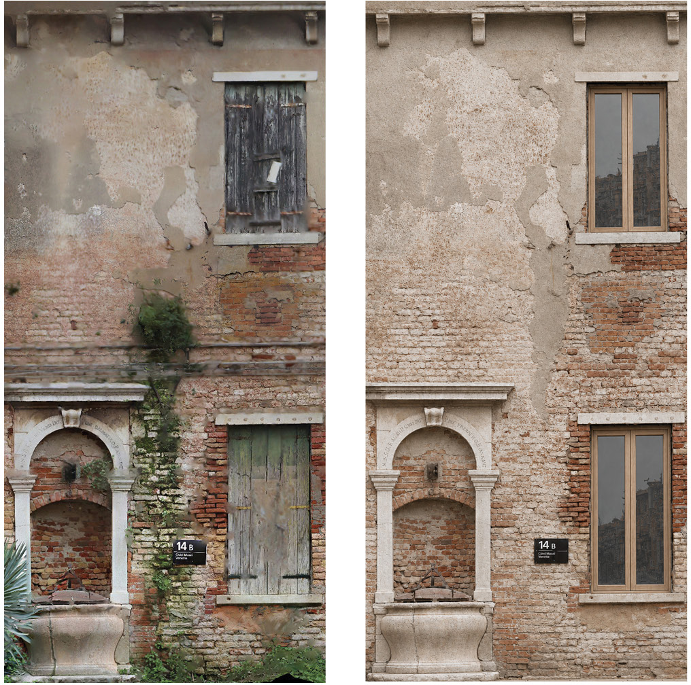
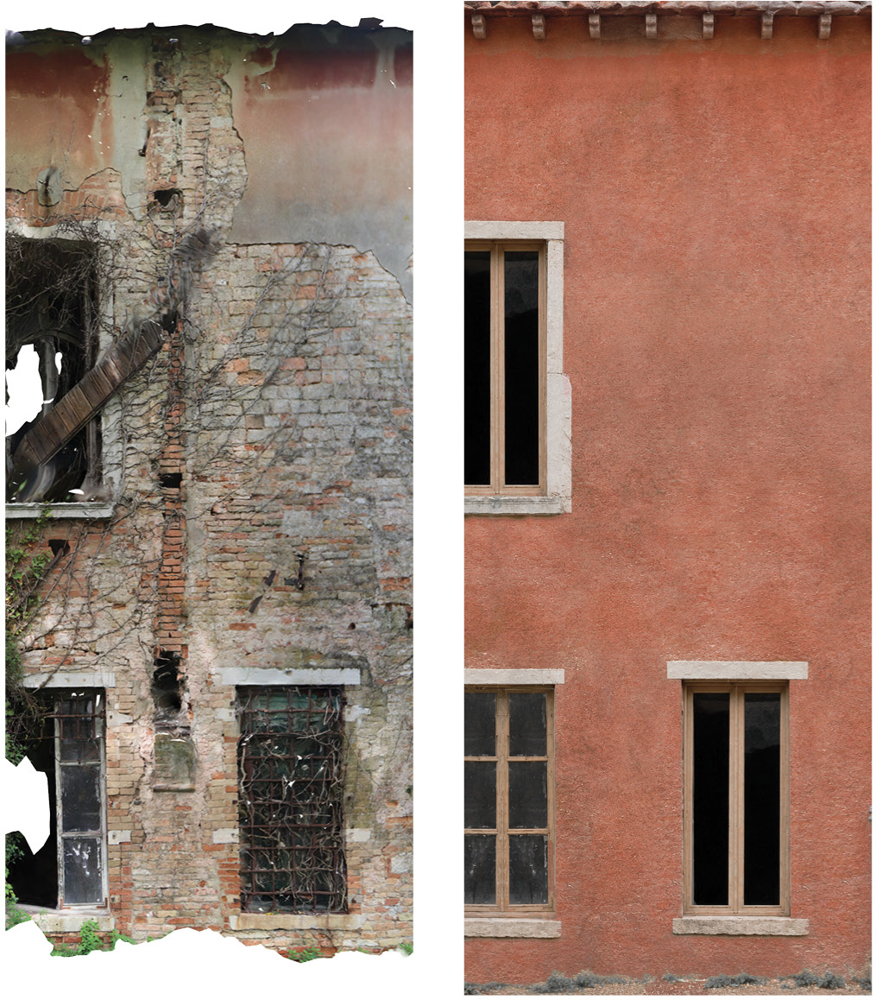
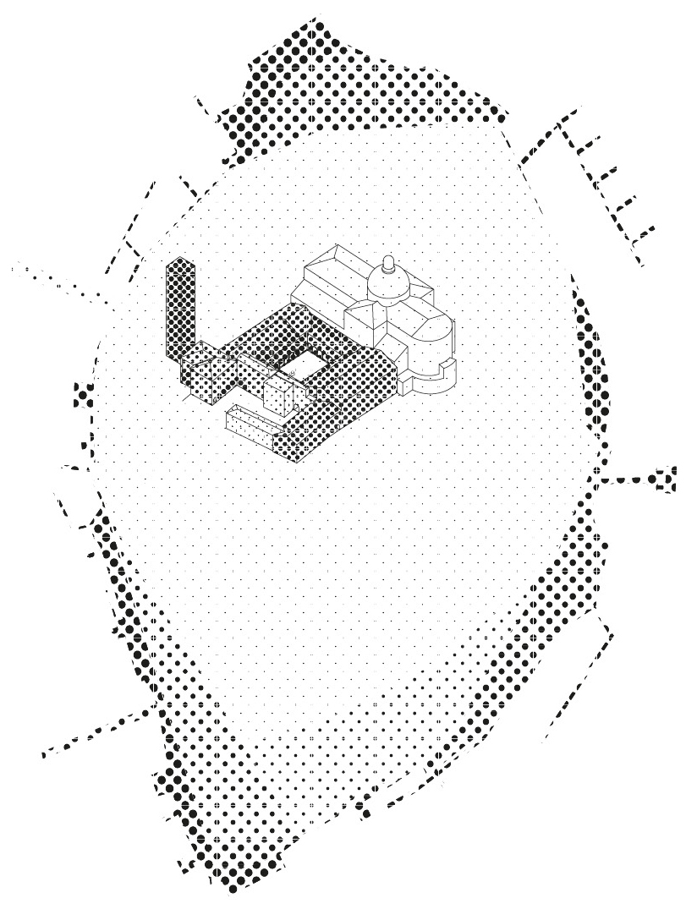
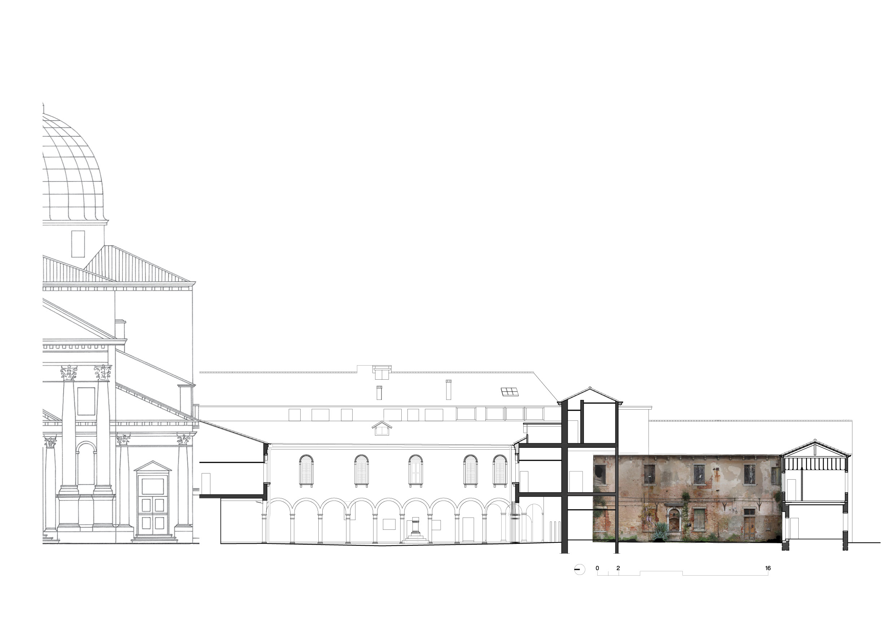
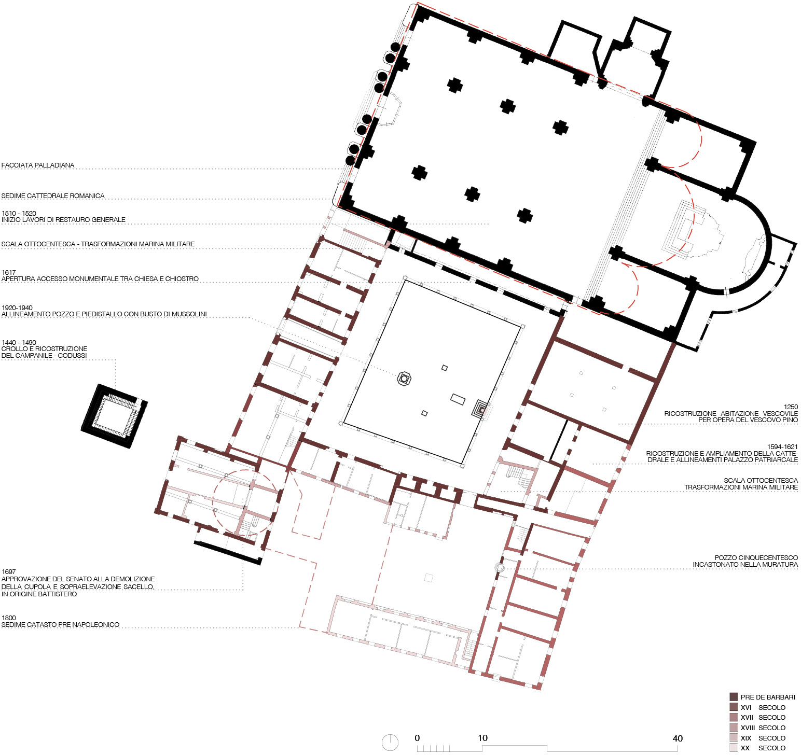
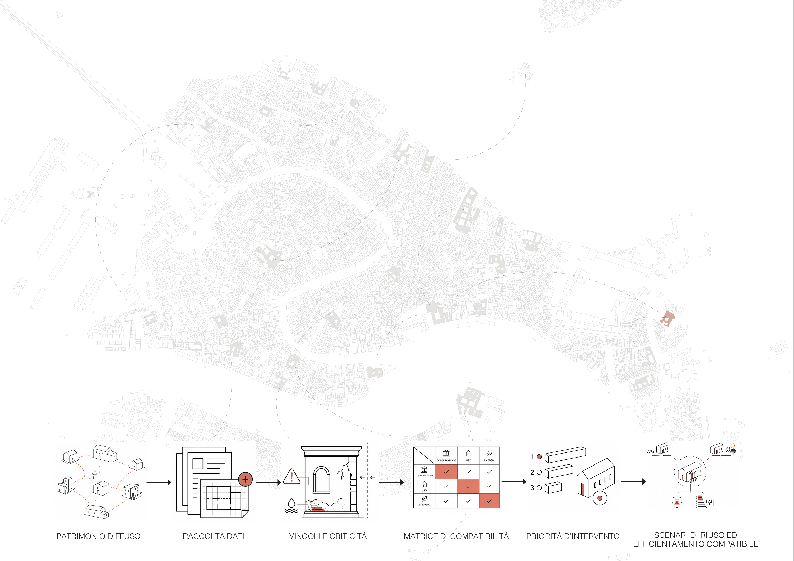
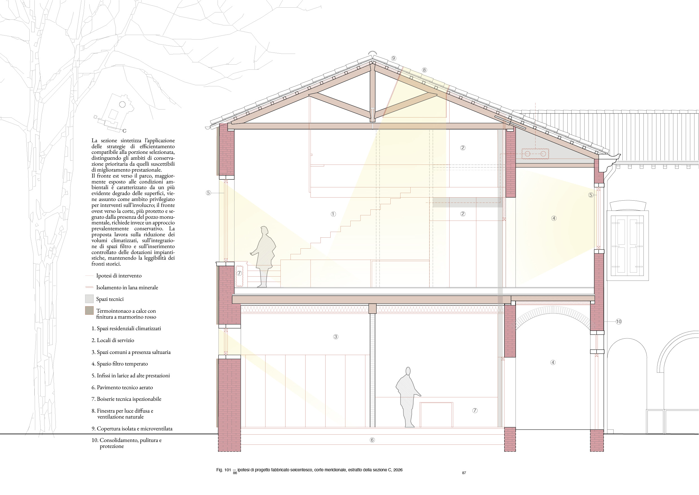

Tesi di Specializzazione in Beni Architettonici e del Paesaggio.
Università IUAV di Venezia · 2025
La ricerca esplora il rapporto tra tutela del patrimonio storico e transizione energetica attraverso il caso studio della Domus Episcopali di San Pietro di Castello a Venezia. Il lavoro propone una metodologia di analisi e valutazione della compatibilità degli interventi finalizzata a coniugare conservazione, riuso ed efficientamento energetico degli edifici storici.









